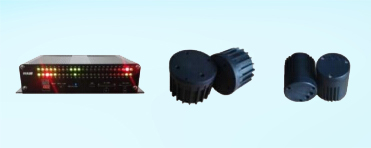

TrafficView software is provided for customers to easily
design the wireless vehicle detection system.it provides a
series of configuration functions for WVD sensors as well
as various forms of data monitor windows. Traffic View
provides a project map design interface and a real-time
oscillometer.These inventive features make system
design and installation visualized.A demo system or
experiment for testing purposes can be easily established
by TrafficView software
CONFIGURATION FUNCTIONS
Sensor configure
Detection mode configure
Detection sensitivity configure
Detection lane distribution
Network filter configure
Pair matching configure
On line oscillometer configure
DATA MONITOR
Device running state monitor
Battery monitor
Signal quality monitor
Vehicle presence monitor
Traffic flow monitor
Occupy rate monitor
Vehicle speed monitor
Driving direction monitor
Statistical average speed
RELATED PRODUCTS
WAP-348x
WVD-130x
WVD-230x

APPLICATIONS
Sensor configuration
Speed measurement
Real-time data monitor
Data statistics and monitor
SUPPORT SERVER
Online shop :
http://rosimits.en.alibaba.com
Tel: +86-760-85313186
Fax: +86-769-85313186
Mail:Rosimits_@163.com
www.rosimits.com
ROSIM specializes in the innovation and production of wireless vehicle detection
solutions for ITS traffic and parking systems.